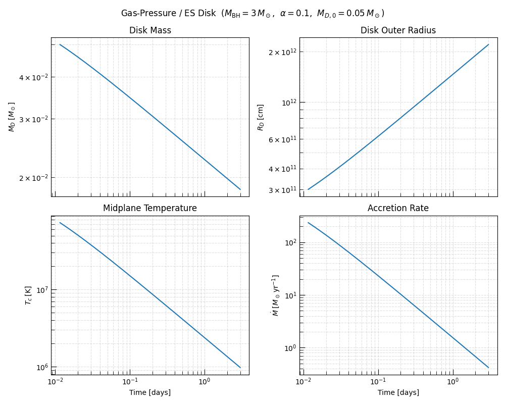
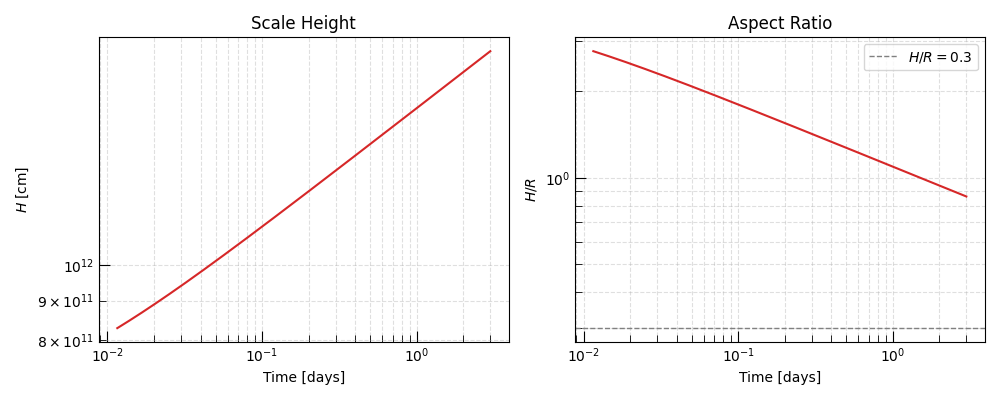

Note
Go to the end to download the full example code.
One-Zone Accretion Disk — Quickstart#
This example introduces the one-zone accretion disk framework in Triceratops. It walks through the minimal workflow end-to-end: constructing a disk model, generating physically consistent initial conditions, running the Cython integrator, and visualising the time evolution of the key disk observables.
The one-zone (or single-zone) approximation collapses the entire disk structure down to two global, time-evolving state variables:
the total disk mass and angular momentum. All structural, thermodynamic, and viscous quantities — disk radius \(R_D\), surface density \(\Sigma\), midplane temperature \(T_c\), viscous timescale \(t_{\rm visc}\), and accretion rate \(\dot{M}\) — are computed self-consistently from these two quantities at every time-step via an analytic closure relation.
In this example we use
GasPressureDisk,
the simplest physically self-consistent closure. It assumes:
Pressure: ideal gas, \(P = \rho k_B T_c / (\mu m_p)\).
Opacity: pure electron scattering, \(\kappa_{\rm es} = 0.34\;\text{cm}^2\,\text{g}^{-1}\).
Viscosity: Shakura-Sunyaev \(\alpha\)-prescription, \(\nu = \alpha c_s^2 / \Omega\).
Cooling: optically thick blackbody radiation.
Under these assumptions the midplane temperature is obtained analytically at each step (no root-finding needed), making this closure both fast and pedagogically transparent.
Physical Scenario#
We model a compact accretion disk around a stellar-mass black hole — the type of system relevant to collapsars, X-ray binaries, and the remnant disks of compact-object mergers. The key input parameters are:
\(M_{\rm BH}\): black hole mass, setting the gravitational potential and the ISCO radius.
\(R_{\rm in}\): inner truncation radius (here taken at the ISCO).
\(\alpha\): dimensionless viscosity parameter, controlling how quickly angular momentum is transported outward and mass drains inward.
The disk is initialized at a characteristic outer radius \(R_{D,0}\) with
a given total mass \(M_{D,0}\). We then use the
generate_initial_conditions()
helper to infer the corresponding angular momentum \(J_{D,0}\) from the
Metzger+08 kinematic constraint
so that the initial state is internally self-consistent.
See Also#
Hint
For a detailed account of the governing equations and the closure pipeline, see One-Zone Accretion Disk Models: Theory. For the full API reference, see One-Zone Accretion Disk Models.
Setup#
We begin by importing the physical constants, unit package, and disk model.
import matplotlib.pyplot as plt
import numpy as np
from astropy import constants as const
from astropy import units as u
from triceratops.dynamics.accretion.one_zone import GasPressureDisk
from triceratops.utils.plot_utils import set_plot_style
set_plot_style()
Model Instantiation#
GasPressureDisk
takes a single context parameter: the mean molecular weight mu.
Context parameters characterise the equation of state and are fixed for the
lifetime of the model object. The default mu = 0.6 is appropriate for a
fully ionised plasma of roughly solar composition.
All other physics inputs — black hole mass, inner radius, viscosity — are runtime parameters passed at solve time, allowing the same model object to be reused across parameter sweeps without reinstantiation.
disk = GasPressureDisk(mu=0.6)
print(disk)
GasPressureDisk
Context parameters (3):
mu = 0.6 [dimensionless] -- Mean molecular weight
opacity = 'electron_scattering' [dimensionless] -- Opacity model name
fallback = False [dimensionless] -- Enable power-law fallback supply
Runtime parameters (7):
M_BH [g] required -- Black hole mass
R_in [cm] required -- Inner truncation radius
alpha [dimensionless] required -- Shakura-Sunyaev alpha
M_fb_0 [g/s] default=1.0 -- Fallback mass supply rate at t_fb
R_c [cm] default=1.0 -- Fallback circularization radius
t_fb [s] default=1.0 -- Fallback reference time
beta_fb [dimensionless] default=1.6666666666666667 -- Fallback power-law index
Initial conditions (2):
M_D_0 [g] required -- Initial disk mass
J_D_0 [g*cm**2/s] required -- Initial disk angular momentum
Result fields (15):
R_D [cm] -- Disk outer radius
Sigma [g/cm**2] -- Surface density
Omega [rad/s] -- Angular velocity
T_eff [K] -- Effective temperature
T_c [K] -- Central temperature
tau [dimensionless] -- Optical depth
c_s [cm/s] -- Sound speed
nu [cm**2/s] -- Kinematic viscosity
t_visc [s] -- Viscous timescale
Q_visc [erg cm-2 s-1] -- Viscous dissipation rate
mdot [g/s] -- Accretion rate
H [cm] -- Scale height
H_over_R [dimensionless] -- Aspect ratio
rho [g/cm**3] -- Midplane density
mdot_fb [g/s] -- Fallback mass supply rate
Physical Parameters#
We adopt parameters representative of a compact remnant disk around a stellar-mass black hole, as encountered in collapsars and short GRB remnants.
The inner truncation radius \(R_{\rm in}\) is set close to the innermost stable circular orbit (ISCO) of the black hole. For a Schwarzschild (non- spinning) black hole of mass \(M_{\rm BH}\):
For \(M_{\rm BH} = 3\,M_\odot\) this gives \(R_{\rm ISCO} \approx 2.7 \times 10^6\;\mathrm{cm}\), consistent with our adopted \(R_{\rm in} = 3 \times 10^6\;\mathrm{cm}\).
Initial Conditions#
Rather than specifying \(M_{D,0}\) and \(J_{D,0}\) independently —
which risks an inconsistent initial disk radius — we use
generate_initial_conditions()
to derive \(J_{D,0}\) from the initial disk mass and outer radius.
We start with a disk of mass \(M_{D,0} = 0.05\,M_\odot\) at an initial outer radius \(R_{D,0} = 3 \times 10^{11}\;\mathrm{cm}\) — roughly \(10^5\,R_{\rm in}\), a plausible configuration immediately after a compact merger or collapsar disk formation event.
Initial disk mass: 0.049999999999999996 solMass
Initial angular momentum: 8.920508530252099e+50 cm2 g / s
Running the Integrator#
solve()
runs the Cython explicit-Euler integrator and returns a
OneZoneAccretionResult.
The time span is supplied as a (t_start, t_end) tuple; both plain floats
(seconds) and Quantity objects are accepted.
Hint
max_steps caps the number of integration steps. The actual number of
steps taken is usually much smaller because the adaptive time-step
\(\Delta t = f \cdot t_{\rm visc}\) grows as the disk spreads and the
viscous timescale lengthens.
Integration successful: True
Steps taken: 1,000,000
Accessing Results#
The data
property returns a dictionary of unit-bearing
Quantity arrays — one entry per declared
RESULT_FIELDS
key, plus "t", "M_D", and "J_D". Field names, units, and
descriptions are all recorded in the model’s RESULT_FIELDS declaration
and are therefore self-documenting.
Available fields: ['t', 'M_D', 'J_D', 'R_D', 'Sigma', 'Omega', 'T_eff', 'T_c', 'tau', 'c_s', 'nu', 't_visc', 'Q_visc', 'mdot', 'H', 'H_over_R', 'rho', 'mdot_fb']
Disk Evolution — Four-Panel Overview#
We now visualize the four most informative diagnostics of disk evolution:
- Disk mass \(M_D(t)\)
Decreases monotonically as mass drains through the inner boundary. The decay rate slows over time as the viscous timescale grows with the expanding outer radius.
- Outer radius \(R_D(t)\)
Increases over time — the defining signature of viscous disk spreading. Angular momentum is transported outward while mass flows inward.
- Midplane temperature \(T_c(t)\)
Falls with time as the surface density (and therefore the viscous heating rate \(q_{\rm visc} \propto \nu \Sigma \Omega^2\)) decreases.
- Accretion rate \(\dot{M}(t)\)
The mass flux through \(R_{\rm in}\). Tracks the overall decay of disk activity and is the quantity most directly constrained by electromagnetic observations.
t_days = data["t"].to(u.day)
fig, axes = plt.subplots(2, 2, figsize=(10, 8), sharex=True)
# ---- Disk mass ----
axes[0, 0].semilogy(t_days.value, data["M_D"].to(u.Msun).value)
axes[0, 0].set_ylabel(r"$M_D \; [M_\odot]$")
axes[0, 0].set_title("Disk Mass")
axes[0, 0].grid(True, which="both", ls="--", alpha=0.4)
# ---- Outer radius ----
axes[0, 1].loglog(t_days.value, data["R_D"].to(u.cm).value)
axes[0, 1].set_ylabel(r"$R_D \; [\mathrm{cm}]$")
axes[0, 1].set_title("Disk Outer Radius")
axes[0, 1].grid(True, which="both", ls="--", alpha=0.4)
# ---- Midplane temperature ----
axes[1, 0].loglog(t_days.value, data["T_c"].to(u.K).value)
axes[1, 0].set_ylabel(r"$T_c \; [\mathrm{K}]$")
axes[1, 0].set_title("Midplane Temperature")
axes[1, 0].set_xlabel("Time [days]")
axes[1, 0].grid(True, which="both", ls="--", alpha=0.4)
# ---- Accretion rate ----
# Convert to solar masses per year for astrophysical readability.
mdot_msun_yr = data["mdot"].to(u.Msun / u.yr)
axes[1, 1].loglog(t_days.value, mdot_msun_yr.value)
axes[1, 1].set_ylabel(r"$\dot{M} \; [M_\odot\,\mathrm{yr}^{-1}]$")
axes[1, 1].set_title("Accretion Rate")
axes[1, 1].set_xlabel("Time [days]")
axes[1, 1].grid(True, which="both", ls="--", alpha=0.4)
fig.suptitle(
rf"Gas-Pressure / ES Disk ($M_{{\rm BH}}={3}\,M_\odot$,"
rf" $\alpha={alpha}$,"
rf" $M_{{D,0}}=0.05\,M_\odot$)",
fontsize=12,
)
plt.tight_layout()
plt.show()

Disk Geometry — Scale Height#
The scale height \(H = c_s / \Omega\) and the aspect ratio \(H/R\) encode whether the disk is geometrically thin — a prerequisite for the standard Shakura-Sunyaev thin-disk approximation to be self-consistent.
A thin disk satisfies \(H/R \ll 1\) throughout its evolution. If \(H/R \gtrsim 0.3\) the thin-disk approximation breaks down and alternative (e.g. slim-disk or ADAF) models should be considered.
fig, axes = plt.subplots(1, 2, figsize=(10, 4), sharex=True)
axes[0].loglog(t_days.value, data["H"].to(u.cm).value, color="C3")
axes[0].set_ylabel(r"$H \; [\mathrm{cm}]$")
axes[0].set_title("Scale Height")
axes[0].set_xlabel("Time [days]")
axes[0].grid(True, which="both", ls="--", alpha=0.4)
axes[1].loglog(t_days.value, data["H_over_R"].value, color="C3")
axes[1].axhline(0.3, ls="--", color="grey", lw=1.0, label=r"$H/R = 0.3$")
axes[1].set_ylabel(r"$H/R$")
axes[1].set_title("Aspect Ratio")
axes[1].set_xlabel("Time [days]")
axes[1].legend()
axes[1].grid(True, which="both", ls="--", alpha=0.4)
plt.tight_layout()
plt.show()

Inspecting the Initial and Final States#
initial_state
and
final_state
provide the full set of derived quantities at the first and last time-steps
respectively — useful for quick sanity checks.
init = result.initial_state
final = result.final_state
print("\nInitial state")
print(f" t = {init['t']:.3e}")
print(f" M_D = {init['M_D'].to(u.Msun):.4f}")
print(f" R_D = {init['R_D'].to(u.cm):.3e}")
print(f" T_c = {init['T_c'].to(u.K):.3e}")
print(f" H/R = {init['H_over_R']:.4f}")
print("\nFinal state")
print(f" t = {final['t'].to(u.yr):.3e}")
print(f" M_D = {final['M_D'].to(u.Msun):.4f}")
print(f" R_D = {final['R_D'].to(u.cm):.3e}")
print(f" T_c = {final['T_c'].to(u.K):.3e}")
print(f" H/R = {final['H_over_R']:.4f}")
Initial state
t = 1.000e+03 s
M_D = 0.0500 solMass
R_D = 3.000e+11 cm
T_c = 7.357e+07 K
H/R = 2.7616
Final state
t = 8.204e-03 yr
M_D = 0.0184 solMass
R_D = 2.206e+12 cm
T_c = 9.742e+05 K
H/R = 0.8617
Total running time of the script: (0 minutes 3.667 seconds)